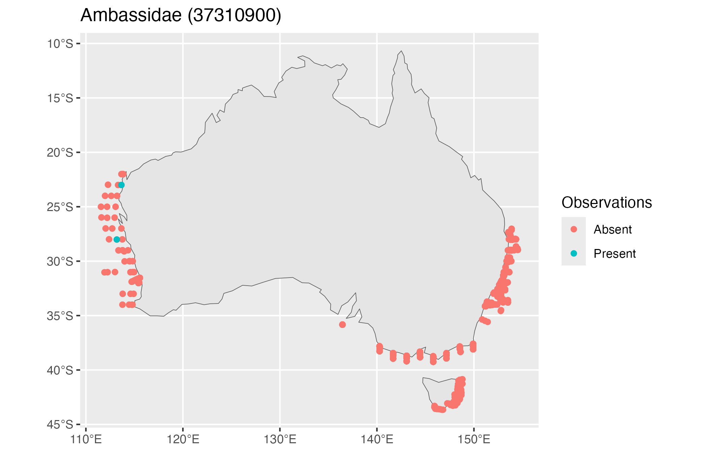

Download Larval Fish Data
df <- pr_get_LFData()Examine the first 20 species
head(unique(df$Species2), 20)
#> [1] "Acanthuridae: Acanthuridae (37437900)"
#> [2] "Acropomatidae: Acropomatidae (37311956)"
#> [3] "Acropomatidae: Synagrops spp (37311949)"
#> [4] "Acropomatidae: Verilus anomalus (37311053)"
#> [5] "Ambassidae: Ambassidae (37310900)"
#> [6] "Ambassidae: Ambassis jacksoniensis (37310012)"
#> [7] "Ambassidae: Ambassis marianus (37310018)"
#> [8] "Ammodytidae: Ammodytidae (37425000)"
#> [9] "Ammodytidae: Ammodytoides spp (37425901)"
#> [10] "Antennariidae: Antennariidae (37210915)"
#> [11] "Aploactinidae: Aploactinidae (37290000)"
#> [12] "Aploactinidae: Matsubarichthys inusitatus (37290013)"
#> [13] "Aplodactylidae: Aplodactylus lophodon (37376002)"
#> [14] "Aplodactylidae: Aplodactylus spp (37376901)"
#> [15] "Apogonidae: Apogonidae (37327926)"
#> [16] "Argentinidae: Argentinidae (37097905)"
#> [17] "Arripidae: Arripidae (37344000)"
#> [18] "Arripidae: Arripis trutta (37344002)"
#> [19] "Astronesthidae: Astronesthidae (37108000)"
#> [20] "Atherinidae: Atherinidae (37246911)"Filter the data for Ambassidae observations
Plot the observations
# Convert the data to an sf object and set observations to present or Absent
df_sf <- df_Amb %>%
sf::st_as_sf(coords = c("Longitude", "Latitude"), crs = 4326) %>%
mutate(Observations = if_else(Abundance_1000m3 == 0 | is.na(Abundance_1000m3), "Absent", "Present"))
ggplot() +
geom_sf(data = rnaturalearth::ne_countries(country = "Australia", returnclass = "sf")) +
geom_sf(data = df_sf, aes(colour = Observations)) +
ggtitle("Ambassidae (37310900)")